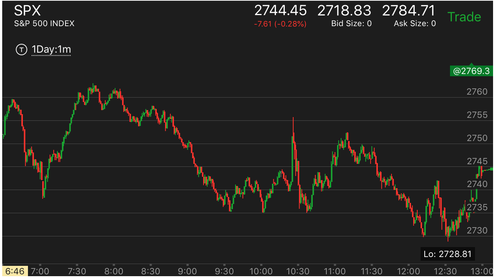
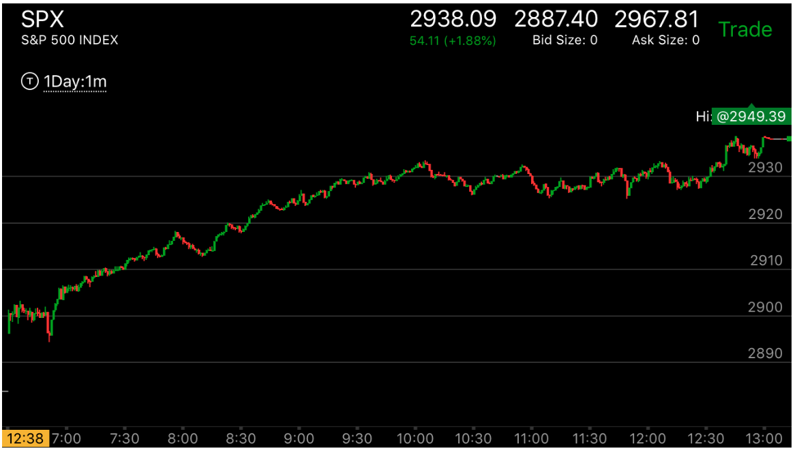

第一浪幅度很大或很小在不同情况下的的变化
- 在更大的走势影响下，第一浪的大小在不同的走势下，作用完全相反。这个如果大势明显的情况，很容易判断。但是如果
大盘就在这个时候反转或者部分反转，就很难判断。这时应该放弃，或者用期权两边保护，如果期权已经很便宜了。

图示：这个是反转走势，6：50反转后，它的第一浪很小，说明会继续大涨。因为它的走势
是向上的。这个很小的第一浪反而是一种很强的力量，它不会因为两段走势第二段超过它而很快反转。

图示：7：00开始的反弹，第一浪幅度就很大，速度也很高，然后走平，再次大幅上涨。这样的走势一定会反转。
而且反转后，创新低，因为它反转的是从最低点开始的走势。

图示：12：20处于升势，它出现了一个小的第一浪。本来应该是大涨的走势，结果它勉强创新高。
然后走平。当然更关键的是更大的走势是部分反转走势。它没有全面反转。这个反而是两段上涨走势的反转。然后大跌。
这个非常难判断，需要考虑更大的走势的问题。但是也可以从小的方面观察出来。因为它没有大幅超过前面高点。没有空间回调。
而且在高点走平。而不是尖锐的高点。这些都是两段转折的走势。

图示：这个走势在盘前走势的驱动下，是升势。它7：00开始的第一浪很大。10个点。这样就不是要反转，
反而是因为第一浪很强，而建立的强大的升势。8：20出现很大的回调后，它出现了很小的第一浪。这个也是一个相对论走势。
说明它要超过前面的高点。所以小小的涨一些，而做准备。它超过高点后，立刻下来，回测关键点。继续大涨。